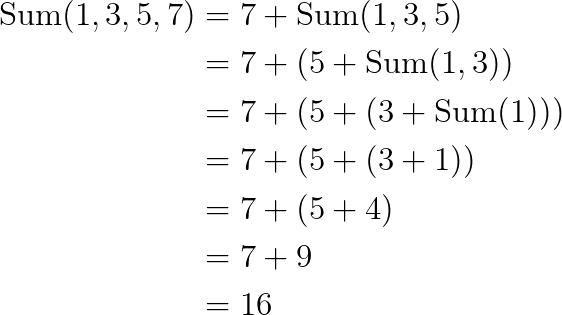

Recursion
Hengfeng Wei
hfwei@nju.edu.cn

Nov. 15, 2021
Review
Functions
- Function Declaration
- Function Definition
- Arrays as Parameters
- Pass by Value
Overview
Recursive Functions (Recursion)

A function that calls (调用) itself.
Recursion
Thinking Recursively

It is a looooooog way to go to master recursion!!!
Recursion: Systems Implementation
- Programs run in memory (内存; 記憶體).
- Memory = Stack (栈区) + Heap (堆区) + $\cdots$
- Each function call has its own stack frame (栈帧).
- Stack grows/shrinks with function calls and returns.
Recursion: Systems Implementation
Recursion: Mathematical Induction
- Base Case (基础情况)
- Inductive Step (归纳步骤)
"Talk is Cheap. Show me the Code."

Min

min-re.c
Sum

sum-re.c
Fibonacci Sequence
$0, 1, 1, 2, 3, 5, 8, 13, 21, 34, 55, 89, 144, \ldots$
- $F_{0} = 0$
- $F_{1} = 1$
- $F_{n} = F(n - 1) + F(n - 2) \qquad (n > 1)$
fib-re.c fib-array.c fib-iter.c
Greatest Common Divisor
- $a > b \implies \text{gcd}(a, b) = \text{gcd}(a - b, b)$
- $a < b \implies \text{gcd}(a, b) = \text{gcd}(a, b - a)$

gcd-euclid-re.c gcd-euclid-iter.c
Greatest Common Divisor
$\text{gcd}(a, b) = \text{gcd}(b, a \;\%\; b)$
gcd-euclidean-re.c gcd-euclidean-iter.c
Binary Search

bsearch-re.c